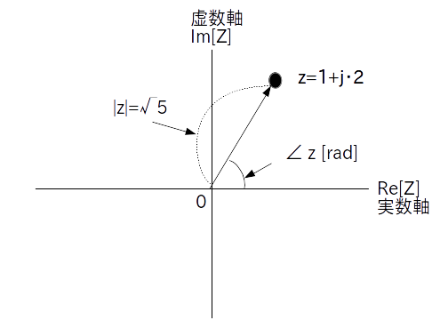
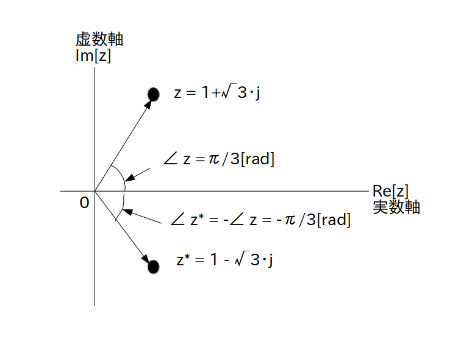

ここまでは複素数を実数軸の座標(実部)と虚数軸の座標(虚部)を使って説明してきました。
このように複素数の位置を複素平面上の座標で表す方式を「直交形式 (rectangular form、または orthogonal form)」、あるいは「デカルト形式(Cartesian form)」といいます。
$a$ と $b$ が実数の時
\[ z = a + j \cdot b \]一方で複素数は複素平面上の点あるいはベクトルでしたので、以下の図 1 の様に絶対値と角度で複素数の位置を表すことも出来ます。
ここで絶対値 $|z|$ は極形式からページ1に示した式で求められます。
また角度は「偏角 (argument of complex)」と言って、図1 のように $\angle \ z$ と書いたり、arg $z$ と書いたり、あるいは $\phi$ や $\theta$ で表したりします。
なお偏角は実数軸から反時計回りに値を測ります(単位はラジアン)。
例:
$z=1+j\cdot\sqrt{3}$
の位置を絶対値と偏角で表すと以下の図になる
この様に、絶対値 $|z|$ と偏角 $\angle \ z$ を使って複素数を表現する方法を「極形式 (polar form)」、または「フェーザ形式」、または「オイラー表現」と呼び、ネイピア数 e を使って次のように定義されます。
絶対値が $|z|$、偏角が $\angle \ z$ の時
\[ z = |z| \cdot \textrm{e}^{\{j\cdot \angle \ z\}} \]この極形式を初めて見た人は必ず戸惑います(何故いきなり e が出てくるのか？何故 e の指数に虚数単位 $j$ が入ってるのか？、etc.)
それらについて深く考え始めると深みにはまりますが、とりあえず複素数をこのような極形式で表したことにより様々な計算問題が簡単に解けるようになって人間社会が発展しました。
特に三角関数が絡む問題に関しては極形式を使うことで簡単になることが多いです(これについては次の学習項目で触れます)。
絶対値 $|z|$ は定義から 0 以上の実数と分かります。
一方、偏角 $\angle \ z$ は角度(ラジアン)ですので$-\infty$ から $\infty$ までの実数値を取れますが、当然 360 度($2\pi$ラジアン)回転させるたびに複素数は全く同じ位置に戻ります。
そこで一般的には偏角の範囲を $-\pi$ から $\pi$ までに限定することが多いです。
この範囲($-\pi$ 〜 $\pi$)の事を「偏角の主値」と呼びます。
虚部の符号が異なる複素数の組のことを複素共役といいましたが、虚部の符号が異なるということは偏角の符号が異なることを意味します(図2)。
例
$z=1+j\cdot\sqrt{3}$
と
$z^*=1-j\cdot\sqrt{3}$
は偏角の符号だけが異なる(絶対値は同じで $|z| = |z^*| = 2$ )
従って複素共役を極形式で表現すると次のようになります。
の複素共役 $z^*$ は
\[ z^* = |z| \cdot \textrm{e}^{\{-j\cdot \angle \ z\}} \]